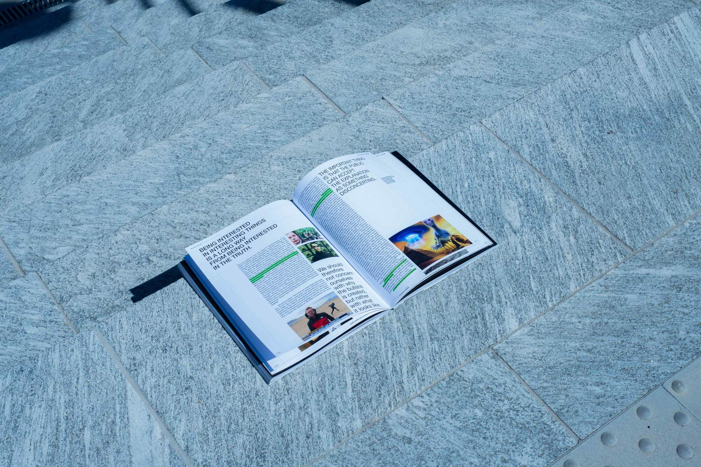
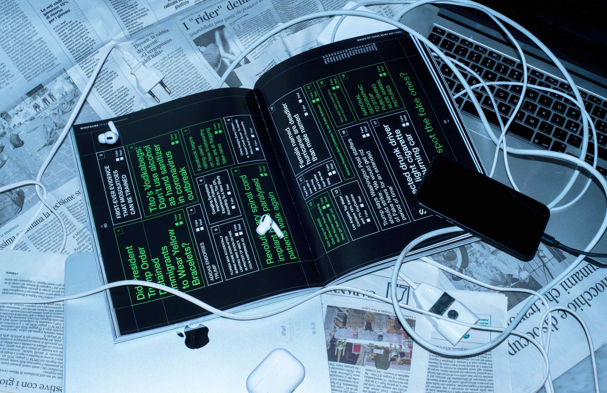

Project
Wireframe is a "social themed magazine".
What is proposed in these pages is not a form to solve that discomfort coming from an overload of information or to be able to bear it without succumbing, but a method that outlines page after page. An attempt to bring everything to an
order and calm in order to mature a critical and stable judgment. In fact, the very structure of the magazine, in the order of the presentation of its contents and sections, illustrates a method for building a critical point of view on
reality. Each article is like a piece, a small line that collaborates to form a Wireframe, a solid and rigorous framework on which it is possible to build and build. This skeleton consti- tutes the foundation on which it is possible to try
to have a clarity; a tool to orient oneself in all this sea of information.
Starting from the awareness of the problem, in this case of digital information, Wireframe proposes virtuous cases of men who, faced with an overload, have managed to change it into something positive, to exploit it and live with it.
The same young editorial crew here proposes what she her- self first of all tries to live in order not to suffocate in this storm of information: what is needed is therefore to find her own way, to find her own Wireframe, her own framework
on which to build, in such a big world where otherwise it would be easy to get lost.
Role
Concept, Editorial content, graphic design, Video editing, photographer, Group coordination.
Team
Caterina Cedone, Marta Monti, Elena Buttolo, Francesca Fincato and Federico Pozzi.